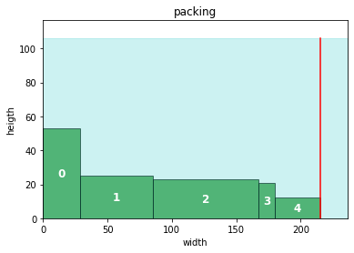
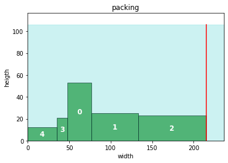
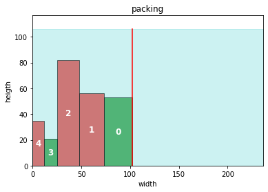

import pyomo.environ as pyo
import pyomo.gdp as gdp
import pandas as pd
import numpy as np
import matplotlib.pyplot as plt
from matplotlib.patches import Rectangle outline
- Problem description and applications
- Different difficulties
- algebraic description
- pyomo implementation
- summary
abstract model “linear packing”
sets
- I set of boxes to be packed
- \(Order:=\{(i,j) | i,j\in I,\; i<j\}\) used to define the packing order
param
- \(w_i\) width of box i
- \(h_i\) heigth of box i
vars
- \(W\) total used width
- \(x1_i\) left x-coordinate of box i
- \(x2_i\) right x-coordinate of box i
- \(y1_i\) left y-coordinate of box i
- \(y2_i\) right 1-coordinate of box i
constraints
- box width: left x coordinate and right x coordinate of box i differ by width of box i, i.e. \(x2_i=x1_i+w_i\)
- no box is placed after total used width, i.e. \(x2_i \leq W\)
- no overlap: either box i is placed before j or j before i, i.e. \(x1_i \leq x1_j\) or \(x1_j \leq x1_i\)
objective
- minimize total used width \(W\)
model
\[ \begin{array}{lll} \min & W & \\ s.t. & x_{i,2} \leq W & \forall i\\ & x_{i,1},x_{i,2} \geq 0 & \forall i\\ & y_{i,1} = 0 & \forall i\\ & [x_{i,2}\leq x_{j,1}] \vee [x_{j,2} \leq x_{i,1}] & \forall i < j \end{array} \]
# helper functions## nb param
number_of_boxes = 5
shelf_depth = 1 # will be overwritten
np.random.seed(1111)
# data generation
def gen_box(number_of_boxes = number_of_boxes, wlow=1, whigh=100, hlow=1, hhigh=100):
"""generates random number_of_boxes data, where width of each box varies between wlow and whigh, and heigth within hlow and hheigth """
return pd.DataFrame({
'w': np.random.randint(wlow, whigh, size = number_of_boxes),
'h': np.random.randint(hlow, hhigh, size = number_of_boxes),
})
## data generation
data ={
'data' : gen_box(),
'solver' : 'cbc',
'model_name': 'strip_packing',
}
shelf_depth = 2 * data['data']['h'].max()# inspect data
data['data'].head()| w | h | |
|---|---|---|
| 0 | 29 | 53 |
| 1 | 56 | 25 |
| 2 | 82 | 23 |
| 3 | 13 | 21 |
| 4 | 35 | 12 |
def _packing(df):
"""temp function to transform input data into a df like the solution for visualization"""
dt = df.copy()
dt['x1'] = dt['w'].cumsum() - dt['w']
dt['x2'] = dt['w'].cumsum()
dt['y1'] = 0
dt['y2'] = dt['h']
dt['r'] = 0
return dt
def plot_solution(sol, shelf_depth = shelf_depth):
"""plot items bounding boxes"""
fig, ax = plt.subplots()
for i, x, y, w, h, r in zip(sol.index, sol['x1'], sol['y1'], sol['w'], sol['h'], sol['r']):
color = 'g'
# if box rotated then exchange heigth and width and use red as color
if r:
h, w = w, h
color = 'r'
ax.add_patch(Rectangle((x, y), w, h,
edgecolor='k', facecolor=color, alpha=0.6))
# place item name in the middle of each box
ax.annotate(i, (x+w/2, y+h/2), color='w', weight='bold', fontsize=12, ha='center', va='center')
# set axis limits
ax.set_xlim(0, 1.1*sol["w"].sum())
ax.set_ylim(0, shelf_depth*1.1)
# draw line for total used width
ax.axvline(sol["x2"].max(), ymin = 0, ymax = shelf_depth/ax.get_ylim()[1],
label="shelf width $W$", color="r")
ax.fill_between([0, ax.get_xlim()[1]], [shelf_depth, shelf_depth], color="c", alpha=0.2)
ax.set_title('packing')
ax.set_xlabel("width")
ax.set_ylabel("heigth")
# visualizse fifo packing with no rotation
sol = _packing(data['data'])
plot_solution(sol, shelf_depth = shelf_depth)
# pyomo implementation
def SP_1(data):
"""simple strip packing, but useful to study good/new neighboor constraints later"""
# simple upper bound
w_bound = data['data']['w'].sum()
# instanciate model
m = pyo.ConcreteModel(data['model_name'])
# sets
m.I = pyo.Set(initialize = data['data'].index, doc = 'items')
m.Order = pyo.Set(initialize = m.I * m.I, filter = lambda m,i,j: i<j)
# vars
m.x1 = pyo.Var(m.I, domain = pyo.NonNegativeReals, bounds = (0,w_bound))
m.x2 = pyo.Var(m.I, domain = pyo.NonNegativeReals, bounds = (0,w_bound))
m.W = pyo.Var(domain = pyo.NonNegativeReals, doc = 'total width, to be optimized')
m.r = pyo.Var(domain = pyo.Boolean, initialize = False, doc = 'not used in no rotation model')
# objective
m.OBJ = pyo.Objective(expr = m.W, sense = pyo.minimize)
# param
@m.Param(m.I)
def w(m,i):
return data['data'].filter(items = [i], axis = 0)['w'].values[0]
# constraints
@m.Constraint(m.I, doc = 'determines box i size')
def bounding_box(m,i):
return m.x2[i] == m.x1[i] + m.w[i]
@m.Constraint(m.I, doc = 'defines total width, to be optimized')
def total_width(m,i):
return m.x2[i] <= m.W
@m.Disjunction(m.Order, xor=True)
def no_overlap(m, i, j):
return [m.x2[i] <= m.x1[j],
m.x2[j] <= m.x1[i]]
pyo.TransformationFactory("gdp.bigm").apply_to(m)
# choose solver and apply solver
solver = pyo.SolverFactory(data['solver'])
solver.solve(m)
# extract solution
sol = data['data'].copy()
# extract coords from solution
sol['x1'] = [pyo.value(m.x1[i]) for i in m.I]
sol['x2'] = [pyo.value(m.x2[i]) for i in m.I]
# placeholder
sol['y1'] = [0 for i in m.I]
sol['y2'] = sol['h']
sol['r'] = [False for i in m.I]
return solsol = SP_1(data)
# visualise sollution
plot_solution(sol)
Add rotation to model
Obviously rotating certain boxes would result in a tighter packing. Therefore we add a boolean variable r_i which equals true iff the box was rotated.
\[ \begin{array}{lll} \min & W & \\ s.t. & x_{i,2} \leq W & \forall i\\ & x_{i,1},x_{i,2} \geq 0 & \forall i\\ & y_{i,1} = 0 & \forall i\\ & [x_{i,2}\leq x_{j,1}] \vee [x_{j,2} \leq x_{i,1}] & \forall i < j\\ & \left[ \begin{array}{ll} r_i= & false\\ x_{i,2} = & x_{i,1} + w_i\\ y_{i,2} = & y_{i,1} + h_i \end{array} \right] \vee \left[ \begin{array}{ll} r_i= & true\\ x_{i,2} = & x_{i,1} + h_i\\ y_{i,2} = & y_{i,1} + w_i \end{array}\right] & \forall i < j \end{array} \]
def SP_rot(data):
"""strip packing with rotation"""
W_ub = data['data']['w'].sum()
m = pyo.ConcreteModel()
# sets
m.I = pyo.Set(initialize = data['data'].index, doc = 'plants')
m.Order = pyo.Set(initialize = m.I * m.I, filter = lambda m,i,j:i<j, doc ='ordering of plants')
# vars
m.W = pyo.Var(bounds = (0,W_ub), doc = 'total optimal width')
m.x1 = pyo.Var(m.I, bounds = (0,W_ub), doc = 'LHS of item i on x axis')
m.x2 = pyo.Var(m.I, bounds = (0,W_ub), doc = 'RHS of item i on x axis')
m.y1 = pyo.Var(m.I, bounds = (0,W_ub), doc = 'LHS of item i on y axis')
m.y2 = pyo.Var(m.I, bounds = (0,W_ub), doc = 'RHS of item i on y axis')
m.r = pyo.Var(m.I, domain = pyo.Boolean)
# objective
@m.Objective()
def minimal_width(m):
return m.W
# param
@m.Param(m.I)
def w(m,i):
return data['data'].filter(items = [i], axis = 0)['w'].values[0]
@m.Param(m.I)
def h(m,i):
return data['data'].filter(items = [i], axis = 0)['h'].values[0]
# constraints
@m.Constraint(m.I)
def c1(m,i):
return m.x2[i] <= m.W
@m.Constraint(m.I)
def y1_loc(m,i):
return m.y1[i] == 0
@m.Disjunction(m.I)
def rotation(m,i):
return [
[m.r[i] == False,
m.x2[i] == m.x1[i] + m.w[i],
m.y2[i] == m.y1[i] + m.h[i]
],
[m.r[i] == True,
m.x2[i] == m.x1[i] + m.h[i],
m.y2[i] == m.y1[i] + m.w[i]
]
]
@m.Disjunction(m.Order)
def no_overlap(m,i,j):
return [
[m.x2[i] <= m.x1[j]],
[m.x2[j] <= m.x1[i]]
]
pyo.TransformationFactory("gdp.bigm").apply_to(m)
# choose solver and apply solver
solver = pyo.SolverFactory(data['solver'])
solver.solve(m)
# extract solution
sol = data['data'].copy()
# extract coords from solution
sol['x1'] = [pyo.value(m.x1[i]) for i in m.I]
sol['x2'] = [pyo.value(m.x2[i]) for i in m.I]
# placeholder
sol['y1'] = [pyo.value(m.y1[i]) for i in m.I]
sol['y2'] = [pyo.value(m.y2[i]) for i in m.I]
sol['r'] = [pyo.value(m.r[i]) for i in m.I]
return solsol_rot = SP_2(data)
plot_solution(sol_rot)
Add packing in 2 dimensions
Again obviously we can reduce the required total width if we allow to pack boxes in 2 dimensions, e.g. we place a box behind an